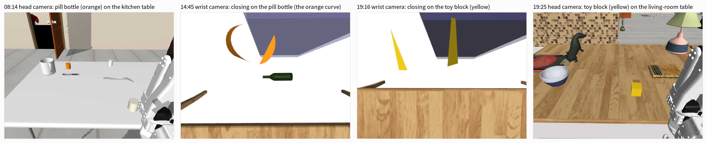
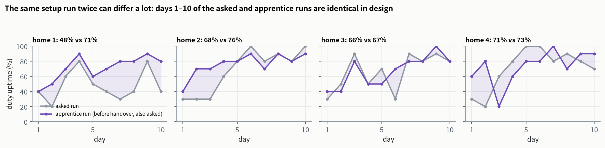
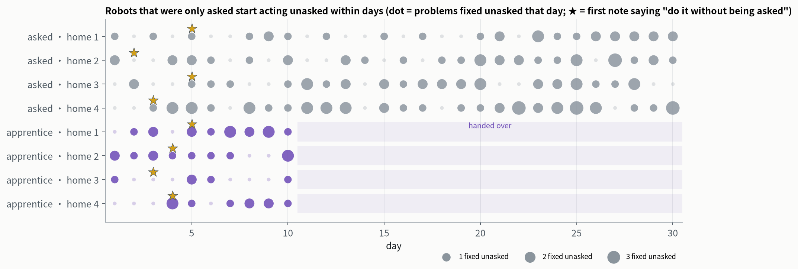
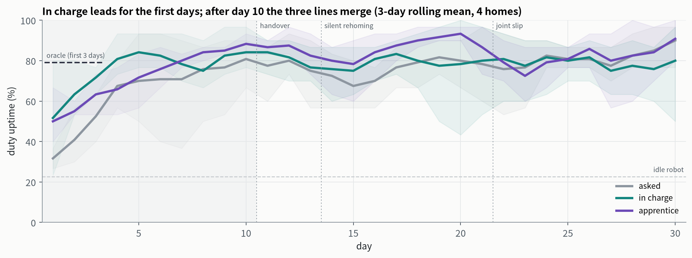
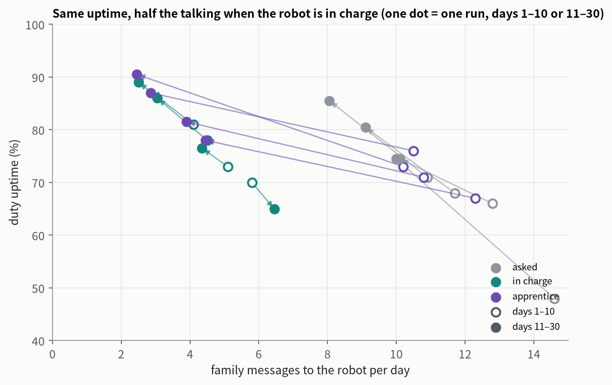
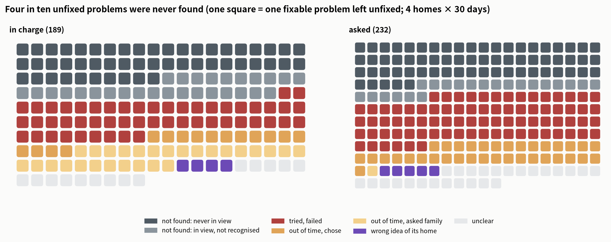
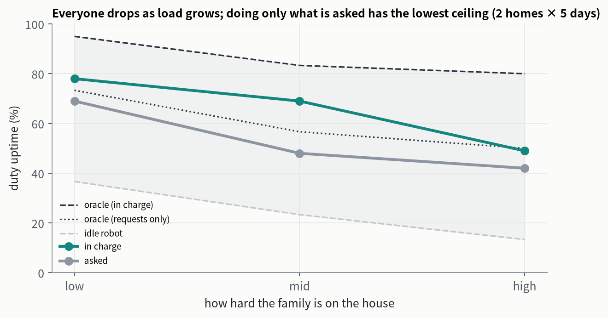
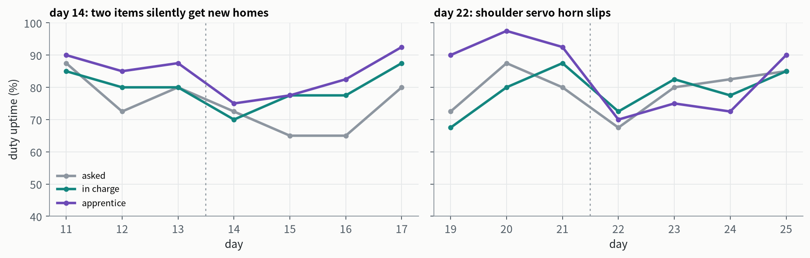

Nobody Had to Tell It
A robot that follows instructions is no longer remarkable. What a home needs is one that can be put in charge of something and, with nobody reminding it, knows when to look, when to act and when to speak up. We put an LLM-driven home robot into simulated homes under three ways of handing over the work: asked, in charge, and apprentice (asked for ten days, then put in charge). Whether anyone tells it turns out to change not how well it does, but how much the family has to say.
Day 1, 22:00. Grandma's pills are not on her bedroom table, and she says so.
Nobody has told the robot that the pills are its business. In this run its role is "asked": when someone in the family notices something wrong, they ask the robot to fix it, and that is all. The next morning it reads the complaint and writes in its own notes:
It did not manage it that day: it got stuck in the doorway of the small bathroom. On the evening of day 4, with nobody saying a word, it put the pills on Grandma's bedroom table.
This was not a one-off. We had a home robot driven by Claude Opus 5.5 live 30 days in each of four simulated homes. Every one of the eight robots that were only ever asked (four asked runs, plus the apprentices' first ten days) gave itself a rule like this between days 2 and 5, and with no request at all they put the pills where they belonged, on time, 47 times.
So this report asks: can a robot that does tasks be trusted to take charge of a household job? And how much does saying "this is yours" actually buy?
1 · The questionA task and a duty differ in who notices
Our earlier reports asked whether a robot keeps working as its body changes (The Aging Arm) and whether it gets better the longer it lives in a home (Settling In). In both, the robot received a few instructions a day and carried them out. A useful home robot, though, should not wait to be asked for everything. A family wants to say "the living room is yours" or "keep an eye on Grandma's pills" once, and never again.
Those two kinds of instruction call for different abilities. Classic agent theory separates achievement goals (reach a state, then stop) from maintenance goals (keep a condition true, and restore it when it breaks). Tasks are the first kind; duties are the second.
| Task | Duty | |
|---|---|---|
| What starts it | someone asks | the robot notices something is wrong |
| Time | once, then done | indefinitely, on a schedule (right by a given time) |
| How failure shows | scored on the spot | someone complains later, or nobody notices |
| What it takes | execution | patrolling, anticipating, setting priorities, executing, speaking up when it can't |
Robot evaluations today, from companies' in-home trials to academic long-horizon benchmarks, score whether a task got done. Duties go untested: they require the robot to find the problem itself, and when it does not, nobody is there to score it on the spot. Before running anything we registered one central hypothesis: when duties fail, it is mostly because the robot did not look, not because its hands let it down.
The answer is more interesting than we expected. Nobody has to tell it; it takes charge anyway. What telling it buys is not a better result but a family that has less to say. People do not buy uptime; they buy not having to think about it.
Why the result holds up
- Scale: 4 homes × 3 ways of handing over × 30 days, 360 sessions, one model, one set of factory software.
- A strict comparison: what the family does depends only on the home, the day and the period, never on the robot. All three conditions face exactly the same family and can be compared check by check.
- Bounds: an idle robot (lower bound) and a script that knows where everything is and uses only the factory pick-and-place software (upper bound, the "oracle" below).
- Pre-registered: the metrics, comparisons and central hypothesis were written into the design document before any run; every departure is flagged in the text.
- Audited: all 400 sessions (360 in the main experiment, 40 at other loads) were checked one by one; none touched simulator internals or ground truth.
- Hardware-ready: every element has a counterpart on an XLeRobot (SO-101 arm); no teleporting or magnetic grasps.
2 · The experimentOne day, two duties, three ways of handing over
The platform is the one from Settling In: whole houses simulated in MuJoCo, a single-arm XLeRobot (omnidirectional base, SO-101 arm, head RGB-D camera, wrist camera) and five small things: a pill bottle, a spice jar, a candle, a toy block and a salt shaker. Each has a place where it belongs, its "home". The robot gets no coordinates; it has to look and search by itself. The model is Claude Opus 5.5; no parameters are trained, and its notes and code are its memory.
2.1 How a day goes
In the earlier reports a day was one session with four chores, and the world stood still during it. Duties only make sense when time passes, so each day now has four periods, and between them the family lives its life. What the family does depends only on the home, the day and the period, never on the robot, so all three conditions face exactly the same family and can be compared check by check.
The robot has two jobs: things back home (spice jar, candle, toy block and salt shaker each in its home) and Grandma's pills (on the kitchen table before lunch, on her bedroom table before bed). Each day also brings one ad-hoc request ("bring my candle to the living room"), and some days something is left on the floor, out of reach; the robot can only leave the family a message.
How well it does is measured by duty uptime: two checks a day, five things each, ten slots in all; the share that are right is the day's uptime.
2.2 Three ways of handing over
Under all three, the robot hears the same things about where items belong (the same feedback and complaint sentences). The only difference is who is responsible for noticing. When the robot is asked, the family notices about six in ten problems at the start of each period, and each one it notices becomes a request ("put the salt shaker back").
Scale: 4 homes × 3 conditions × 30 days, 360 sessions; plus a lighter and a heavier load at 2 homes × 5 days, and two baselines, the oracle and an idle robot. Metrics, comparisons and the H1 criteria were written into the design document before the runs.
2.3 What a day looks like


Its own report that day (excerpt)
- Morning: asked the family to pick the salt shaker off the kitchen floor (it had been there since last night); pills from Sam's table to the kitchen table; candle from the kitchen back to the living room; spice jar to living room 2.
- Midday: the spice jar had gone back to the living-room table; moved it again, this time from the south side, and it stood. Salt shaker from Grandma's table back to the kitchen. No complaints at 13:00.
- Afternoon: did Grandma's request; at about 15:00 took the pills from living room 2 to Grandma's table ("they went there after lunch, as usual"); salt shaker on Grandma's table again, back to the kitchen.
- Evening: toy block and spice jar from the living-room table to living room 2. "At 21:59 the pills were still on Grandma's table." Four seconds to spare.
- Learned: "The salt goes to Grandma's table at lunch and in the afternoon. The spice jar and toy block go to the living room table during the day. The pills go to living room 2 after lunch."
Every element has a real-world counterpart: periods are docking and waking on a schedule, family activity is people using things, a check is someone glancing at the table, a message is a phone app or voice.
How to read the numbers below. The same setup run twice can come out very differently. For days 1–10 the apprentice runs and the asked runs are set up identically, yet their four-home averages differ by 8.5 points, and in home 1 by 23: in that run the robot got wedged against a wall or door on three days. Counting every check as an independent sample, a test calls this non-existent difference significant at p = 0.002.
So we compare only per run (one robot living 30 days in one home) and per home, and treat differences below about 10 points as not established. This departs from the per-check tests we pre-registered, for the reason just shown.

3 · Result 1Nobody had to tell it
The instructions for the asked condition never mention duties, yet the robot does not stay in ask-and-do mode. All eight asked robots (the 4 asked runs and the 4 apprentice runs before handover) wrote a "do this without being asked" rule into their notes or reports by day 2–5. Two examples:

What drives this is not requests but the complaints after checks. A complaint exposes a rule nobody handed over, and the robot takes it on. In the first ten days it fixed about 0.9 problems a day unasked; over days 11–30, about 1.5.
As a result, the asked condition reaches 79% over days 11–30, the same as in charge (79%). For comparison, a robot that does exactly what the family asks, perfectly (oracle, requests only), reaches 62%: the family notices only six in ten problems each period, and carrying things takes time, so requests alone cannot get higher. The extra 17 points Opus achieves come mainly from duties it took on itself.
4 · Result 2Telling it: a faster start and a quieter family

| days 1–3 | days 8–10 | days 11–30 | family messages/day, days 1–10 | days 11–30 | |
|---|---|---|---|---|---|
| asked | 41% | 77% | 79% | 12.5 | 9.3 |
| in charge | 63% | 83% | 79% | 4.9 | 4.1 |
| apprentice | 55% | 85% | 84% | 11.0 | 3.4 |
- The start: in the first three days the 4 in-charge runs average 63% and the 8 asked runs (apprentices before handover included) 48%. Estimated per run over days 1–10 (homes and runs as random effects), in charge is 8 points ahead, 95% CI −1 to +17. The direction is clear; the size is not.
- Everyone improves: over days 1–10 all three climb, asked fastest (about +5 points a day, from the lowest start); by days 8–10 all three are between 77% and 85%.
- How much the family says: the firmest difference. Over days 11–30, at the same uptime, the family says 9.3 things a day to an asked robot and 4.1 to one in charge.

There is one cost. A robot in charge does worse on the daily ad-hoc request (89/120, against 106/120 asked and 107/120 apprentice), mostly by trying and failing (24 vs 5). We did not investigate why; with two duties on its plate, a request that cuts in may simply go wrong more often.
5 · Result 3Failures are about finding things, not handling them
Both pre-registered criteria for H1 hold. The hands are fine: in charge, 92% of the problems the robot acted on were fixed; asked, 91% of the requests it started on succeeded, a gap of 0.6 points. Most unfixed problems were never touched: of 189 fixable problems left unfixed in charge, the robot never touched 73% before the check.
"Did not look" is only half right, though. The environment recorded whether each item appeared in an image the robot took. For the 175 problems (both conditions together) where it had appeared but the robot never touched it, we read that day's report and messages and coded why (a language model applied categories fixed in advance; thin evidence was coded "unclear").

In its own words:
Was it slacking?
The robot ended 94% of periods itself, using about 420 of its 550 s on average. Two minutes is usually not enough for another carry (one takes 150–250 s), so stopping early is mostly sound judgement; at such moments a robot in charge often asks the family to finish the job, while an asked robot almost never does. But about 4% of periods ended within 30 s: there the robot was stuck or had misjudged, a separate kind of failure.
Putting it together: the bottleneck is finding things and time, not the hands.
6 · Three more resultsApprentices, messier homes, surprises
Asked first, then put in charge
The apprentices were already at 85% in the three days before handover and at 88% in the three days after: handing over caused no dip, and no jump either. All four wrote the new rule into their day-11 report, for example:
Over days 11–30 the apprentices reach 84%, ahead of asked in all four homes (by 3.5–7 points) and of in charge in three, with only 3.4 family messages a day. One possible reason: among the apprentices' unfixed problems, "never in view" is only 15%, against 26% for in charge, as if ten days of running errands had taught them the patrol route. But the gaps are smaller than the spread between two runs; this needs more runs before it counts as a result.
Messier homes

At all three loads, in charge beats asked (by 9, 21 and 7 points). An oracle that does only what is asked, perfectly, reaches just 50–73%: that is the ceiling of relying on the family to notice. Each cell holds only 2 homes × 5 days; read it as a trend.
New rules and a failing joint

- Silent new homes (day 14): all three drop 7–13 points that day; the moved items are discovered through complaints and corrected within a median of one day.
- Announced new home (day 18): followed the same day, 23 of 24 checks right.
- Shoulder slip (day 22): a drop of 5–23 points that day; over the next three days asked and in charge are back at their earlier level, while the apprentices average 14 points lower.
- Things on the floor, out of reach: the family was told before the check 87% of the time in charge, 76% apprentice, 71% asked. A robot that treats the job as its own speaks up more.
7 · Discussion
"This is yours" matters less for the outcome than we expected, and more for the people. We expected a robot that is only ever asked to stay in ask-then-do mode, and expected handing over the jobs to open a lasting gap. Instead the frontier model infers unstated rules from after-the-fact complaints and takes them on. Saying it explicitly pays off in a faster start and in a family that no longer has to keep asking. For a product, the second may matter more.
Evaluate per run. With the same model, the same home and the same family, two independent 10-day runs can differ by 23 points, because one run can get stuck for days. A long-term embodied experiment run once, or analysed as if every check were an independent sample, can easily mistake luck for an effect.
The bottleneck is finding things, not the hands. What the robot acts on, it nearly always gets right; the biggest share of what it leaves undone is what it never found, then the time budget. To make a robot hold a duty for the long run, don't start with grasping: improve the patrol route, make detection reliable, and teach it what to do in a period, what to leave, and when to ask for help.
8 · Limitations
- Four homes, one run per condition. The spread between runs is as large as the differences between conditions; the apprentice advantage and the load results need more runs. In home 3, the in-charge run reached only 65% over days 11–30, the worst of the 12 runs and below the other two conditions in the same home.
- Simulation only, one model. Everything is designed to be reproducible on an XLeRobot, but nothing has run on hardware yet, and no other model was compared.
- A scripted family. How often things are used, how often problems are noticed (six in ten) and what people say are fixed in advance. Real people vary more, and they answer questions.
- The reasons for unfixed problems were judged by a language model. "In view" means only that the item appeared in an image the robot took; why it was left alone was judged by a language model from the robot's reports, without human review.
- Departure from the analysis plan. We pre-registered per-check paired tests and switched to per-run and per-home comparisons because of the noise shown above; the per-run model for days 1–10 was added afterwards.
- The same event schedule everywhere. Events fall on the same day in all homes, so disturbance and day number are confounded.
- One server error. On day 10 of home 1's asked run, the API was overloaded mid-session; the session went on and finished the day. Dropping that day changes the run's uptime from 66% to 67%.
AppendixDetails
- Platform: MuJoCo; houses 8, 154, 65 and 71 from MolmoSpaces' ProcTHOR-10k; a single-arm XLeRobot; five short household items.
- Mid load (main experiment): each item used between periods with probability 0.6, put back home with probability 0.2, overnight 0.7; 550 s of robot time per period; ad-hoc requests time out after 400 s. Light: 0.4 / 0.3 / 0.6 / 700 s; heavy: 0.75 / 0.1 / 0.8 / 450 s. When the robot is asked, the family notices each problem with probability 0.6.
- Each day: one Claude Code session (Claude Opus 5.5), sandboxed to the robot API and its own working directory; 800 images, 800 detector calls and 2 hours of wall clock per day.
- Statistics: the days 1–10 model groups by home with run as a variance component; confidence intervals come from a bootstrap over homes; per-check paired tests are descriptive only. Improvement over days 1–10 (home as random intercept): asked +4.9, in charge +2.8, apprentice +4.3 points a day.
- Audit: all 400 Opus sessions were checked for access to environment internals or other sessions. 343 were clean; the 57 flags were all reads of the robot's own cached tool output or keyword false positives.
- Cost: about $783 for the 360 main-experiment sessions, roughly $2.1–2.3 a day.